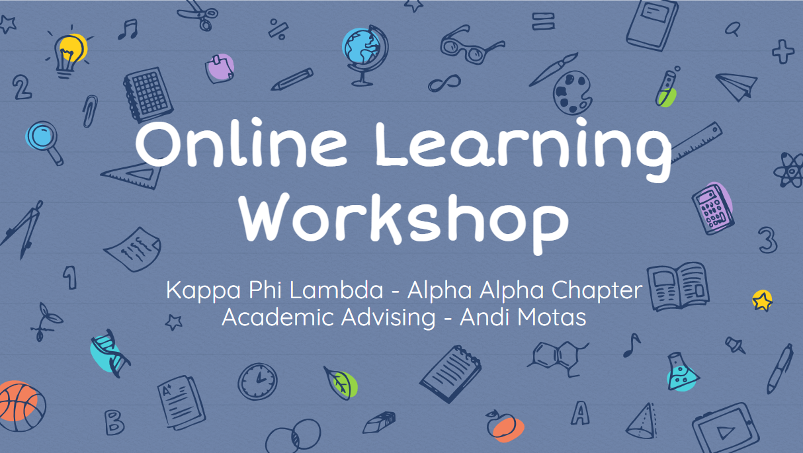

as academic advising chair my responsibilities included creating and hosting events that provide resources and helpful insight for our chapter to be academically and professionally successful. I took the time to do research and compile resources and information in hopes that our members could improve their skillset. below are the two workshops I have hosted so far.
